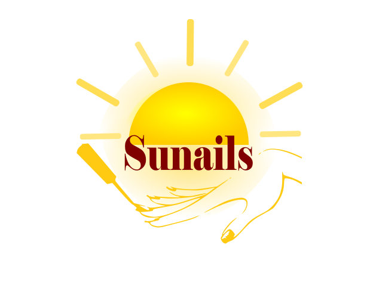
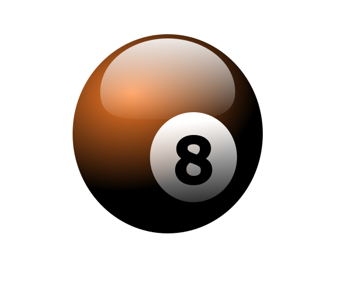

Attēlu apstrādes programmā Inkscape veidojām izvēlētā uzņēmuma logo. Mūsu grupa izvēlējās manikīira un nagu lakas uzņēmumuu ar nosaukumu "Sunails". Logo es attēloju uzņēmuma nodarbošanos, simbolus un mērķus.

Inkscape izveidoju arī biljarda attēlu ar biljarda bumbu
